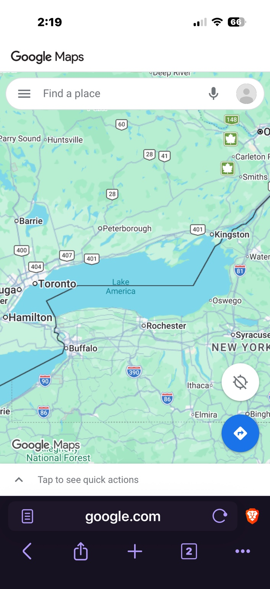

Donald Trump can tell the United States government what to call Lake Ontario.
He cannot tell Google what to call it.
That distinction cuts through most of the slogans, anger and political theatre surrounding the sudden appearance of “Lake America” on Google Maps.
Trump’s Aug. 27 executive order directs the U.S. secretary of the interior and the U.S. Board on Geographic Names to make “Lake America” the official name used by the federal government, change the federal Geographic Names Information System and use the new terminology on federal maps, contracts, documents and communications.
The order does not order Google, Apple, MapQuest, Microsoft, newspapers, schools, New York State, Canada or the rest of the world to follow.
Google followed anyway.
MapQuest did not.
MapQuest proves there was a choice
The cleanest way to understand Google’s decision is to start with MapQuest.
Both companies were confronted with the same event. The White House issued the same executive order. The U.S. geographic-names database changed. The federal government adopted the same new terminology.
MapQuest’s response was four words: “We’re not changing it.”
The company then doubled down, saying it would continue calling the lake Lake Ontario and launching a tongue-in-cheek tool that allowed users to make their own labels. The humour generated headlines, but the underlying point was serious: a change in GNIS does not legally command a private mapping service.
Google made a different decision.
On Aug. 29, Google published a statement saying that because GNIS had formally changed the U.S. name, people using Google Maps in the United States would see “Lake America.” Canadians would continue to see “Lake Ontario.” Users outside both countries would see both names.
Google described this as the application of a longstanding policy for bodies of water whose names differ by country. That is a coherent policy. It is also Google’s policy.
The naming academics are already involved
Reuben Rose-Redwood, a University of Victoria geography professor whose research includes the politics of place naming, told Global News that place naming is not a neutral practice and has long been bound up with assertions of authority. Read the interview →
Derek H. Alderman, a University of Tennessee geographer and specialist in the politics of memory and place, has argued with Rose-Redwood that renaming is a form of “world-making”: maps do not merely describe political power; they can express it. Read their analysis →
Clancy Wilmott, a UC Berkeley geographer, has emphasized the jurisdictional limit: a U.S. president can change how his government refers to a place, but cannot require another country to adopt the change. Read more →
Scott Stevens Manning, an Akwesasne Mohawk scholar and associate professor at Syracuse University, has drawn attention to the Indigenous linguistic history embedded in “Ontario.” Read ICT’s report →

What the official American system actually controls
The U.S. Board on Geographic Names exists to standardize federal geographic nomenclature. Congress reorganized the board in 1947 and directed it, together with the secretary of the interior, to establish uniform usage throughout the federal government. Its decisions become standards for federal publications.
That is significant authority. The federal government produces maps, navigational products, scientific databases, emergency information, contracts and vast quantities of public data. Once the name was changed in GNIS, “Lake America” became the operative name across those federal systems.
But federal standardization is not the same as universal naming authority.
The government’s own geographic-names materials distinguish federal use from the decisions of states, foreign governments and other naming authorities. New York Gov. Kathy Hochul has said New York will continue calling it Lake Ontario. Canada has not renamed it. Ontario has not renamed it. Apple Maps was still displaying Lake Ontario on Sunday. MapQuest said no.
Nor is there a world agency that can take the White House order, stamp it “approved,” and compel every country to change its maps. The United Nations Group of Experts on Geographical Names promotes standardization and co-operation, but national naming authorities remain central. Where countries use different names for a shared or disputed feature, multiple names can coexist.
Canada and the U.S. already had rules for shared geography
This dispute is more unusual because the two countries have a specific bilateral framework for geographic features along their border.
In 1989, Canadian and American naming authorities approved the Treatment of Names of Geographical Features Shared by the United States and Canada. It says coordination is mutually beneficial, established names are highly desirable to retain, local usage matters, and name changes for transboundary features should be considered by the appropriate naming authorities in both countries.
The Congressional Research Service later summarized ordinary U.S. policy this way: for features crossing the Canadian border, the U.S. Board on Geographic Names is to coordinate proposals with the appropriate Canadian naming authority under the 1989 arrangement.
There is an important caveat. The American board’s manual also says names specifically established by an executive order are legally official for federal purposes and are not bound by its ordinary principles and procedures. Trump used that presidential lane.
So the serious institutional question is not answered by shouting that the order is either “fake” or globally binding. It is narrower: the president made a federal name official through an exceptional route, while bypassing the normal co-operative naming process designed for shared Canada–U.S. geography.
Read Canada at War’s companion report on the 1989 agreement →
Google’s defence is reasonable — and still a choice
Google has a real operational problem to solve. A global map must display places whose names differ by language, country, history and politics. Some boundaries are disputed. Some seas have competing names. Some cities have exonyms. There is no frictionless universal label.
Using official national sources is therefore defensible. It creates a repeatable rule rather than requiring Google executives to adjudicate every geopolitical controversy from scratch.
But a consistent rule does not eliminate corporate agency.
Google decided which government databases it treats as authoritative. Google decided how to resolve conflicts between them. Google decided that users’ locations should affect which name is primary. And Google decided that an American user looking at an international lake should see only “Lake America” as the principal label rather than, for example, “Lake Ontario / Lake America” or “Lake Ontario — U.S. federal name: Lake America.”
We know a dual-name solution is technically possible because Google itself says users outside Canada and the United States will see both names.
That makes the U.S.-only rendering a cartographic choice, even if it is the automatic product of a pre-existing corporate rule.
From official authority to infrastructure power
The distinction between legal authority and practical power is the heart of this story.
| Kind of power | Who holds it | What it does |
|---|---|---|
| Official naming authority | Federal, provincial, state and national naming institutions | Determines names used by governments within their jurisdictions. |
| International recognition | Other governments, international practice and cartographic convention | Determines whether a national designation spreads beyond the country that adopted it. |
| Distribution or “map” power | Google, Apple, Microsoft, MapQuest, OpenStreetMap and other platforms | Determines what names ordinary users actually encounter on phones, search results, cars and embedded maps. |
Google is not the legal names authority for Lake Ontario. It cannot change the Canada–U.S. boundary. It cannot amend Canadian law. It cannot make Ontario’s naming board recognize a different name.
But Google says more than two billion people use Google Maps each month. A label presented repeatedly to an audience of that size can acquire a social reality that once required years of government mapmaking, textbook publishing, journalism and common usage.
That is outsized influence even if it is not sovereign authority.
Apple has similar structural significance because Apple Maps is built into an enormous global device ecosystem, although Apple does not publish a directly comparable Maps-user figure. Microsoft and other data providers feed geographic labels into software, search and business systems. OpenStreetMap, meanwhile, can store multiple local, official and alternative names, leaving downstream map renderers to decide what to display.
The result is a layer of private governance sitting on top of public naming law.
Canada saw the consequence immediately
The power is not confined to the Google Maps app.
Organizations embed Google’s mapping products in their own websites and services. This weekend, the American terminology appeared on some Canadian institutional pages that use Google map data even though the governments responsible for those institutions had not changed the Canadian name. Ontario began reviewing affected sites.
That is an extraordinary illustration of infrastructure power: a U.S. president changes a federal database; a private California technology company applies its own rendering policy; and the resulting terminology can surface inside Canadian websites whose own naming authorities reject it.

Maps have never been neutral
None of this means that Google invented political cartography. Governments have used maps to express claims, suppress names, standardize languages and reinforce national narratives for centuries.
That is why Rose-Redwood and Alderman’s intervention matters. Political toponymy — the study of place naming as a political and cultural act — starts from the proposition that names carry history and authority. A name can preserve Indigenous language, commemorate conquest, normalize a border or tell citizens which version of history a state considers official.
The word “Ontario” itself makes that plain. Scholars and Indigenous language experts trace it to an Iroquoian language tradition predating both modern countries. Manning has cautioned against overly simple claims about exactly which language supplied the word, but the Indigenous origin is not seriously in doubt.
Replacing that name for U.S. federal purposes therefore does more than alter letters on a database line. It asserts a new political story about the feature.
Google then decides how prominently that story enters everyday life.
What Google has — and does not have
It would be an exaggeration to say Google now “names” the world. It does not. Governments, local communities, Indigenous nations, language communities, international organizations and ordinary usage all remain part of the process.
It would also be an exaggeration to say Google simply had no choice.
MapQuest demonstrates otherwise.
The more accurate conclusion is that the digital-map era has created a new kind of authority that the traditional geographic-naming system was not built to regulate. Google and Apple are not sovereigns, but their interfaces are where millions of people encounter the work of sovereign naming systems. When governments disagree, the platforms must decide which official source to privilege, whether to show one name or several, and which audience sees which version.
Those decisions deserve scrutiny precisely because they are private choices with public consequences.
The question after Lake Ontario
Trump’s federal designation could disappear under a future administration. The older name could remain dominant in public usage regardless of what GNIS says. Or “Lake America” could persist in American federal terminology for years.
The larger issue will remain after this particular fight is forgotten.
Who decides what a place is called when governments disagree?
Legally, there are naming authorities and jurisdictional rules.
Internationally, there is negotiation, convention and sometimes unresolved disagreement.
But for the person holding a phone, the immediate answer increasingly comes from a private company.
Trump changed a U.S. federal name.
Google chose to put that name in front of American users.
MapQuest chose not to.
That difference is not a footnote to the Lake Ontario story.
It is the story.
Sources and further reading
- Google — its Aug. 29 Maps statement
- MapQuest — “We’re not changing it”
- White House — Aug. 27 executive order
- U.S. Board on Geographic Names — Principles, Policies and Procedures
- Congressional Research Service — geographic naming policy
- Global News — Google Maps decision and Reuben Rose-Redwood
- Reuben Rose-Redwood and Derek H. Alderman — analysis of the renaming
- ICT — Indigenous language history and Scott Stevens Manning
- Google Maps logo — Wikimedia Commons, PD textlogo
- MapQuest logo — Wikimedia Commons, PD textlogo
{kind=link}
{kind=link}